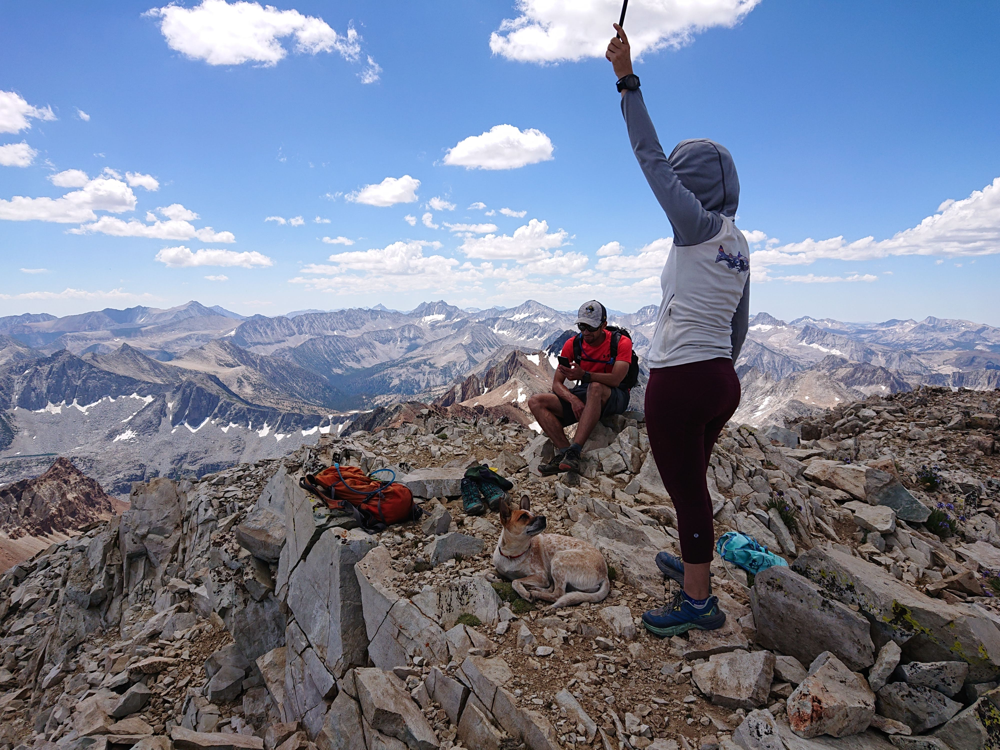

Hail on Red Slate Mountain
Red Slate Mountain is a 20 mile hike with 5700ft gain from McGee Creek Trailhead, mostly on scenic trail, with the last mile a straightforward class 1-2 scree ridge. It took us 10.5 hours. That’s a pretty good day, for a dog.

We pulled up to the trailhead at 5:20am, with the morning light already arriving. The first couple of miles are pretty gentle, an unnotable sandy path.

We encountered a log bridge river crossing, which I confidently traversed without any help, to the surprise of the human pack.

I was so excited to be playing with my friend Piton and his cousin Kami visiting from the city! They’re small but fast.

We leaped through meadows, terrorizing alpine chipmunks and sipping in streams. The skyline was dominated by contrasting creamy granite slabs, and red-streaked volcanic scree.

I got so hot from running that I sat in a river crossing to cool off.

After passing a billion interesting lakes left and right, the human pack made their first and last stop at Little McGee to fill up their water bags. We scrambled down the talus to the water, and daiyi picked me up and dunked me in the chilly alpine lake!! Supposedly it’s because they knew it would be my last opportunity to cool off before the ascent to the pass and then the peak. I rolled on my back in the dirt to regain dignity and dryness.
The daschunds turned around here as the trail became a scree pile, so I said goodbye to Piton and his humans.
The terrain took a shift from soft dirt to red scree switchbacks until McGee Pass. I gazed into the next valley over, mentally calculating how many alpine chipmunks must be in there.

Suddenly, a new friend joins the party as we head for the summit. He walked really quickly to catch us, which is impressive for a human, although I am definitely faster.
I encounter a surprise: snow! (Somehow the humans completely ignored this fun detour to roll around, prance, and dig).
We arrive at the summit in time for lunch. Daiyi inhales a summit burrito without even sharing.
We had passed a couple backpackers heading down, but had the summit to ourselves.

As the clouds roll in, I become a donut and take a powernap.
The breeze picks up, so the humans start down the mountain with the afternoon t-storm forecast in mind.
Here’s Little McGee on the way up, and then how it looked on the way back, ominous clouds and silver water:

By the time we hit the lake, I felt the first drop of water, and when we reached treeline we heard thunder! The hail started falling so fast that it hurt and we hid behind a tree for a couple minutes before the humans started to trailrun (which was my strategy all along).
After a couple of miles, we outran the rain.
The final miles were longer and flatter than I remember. I even ceded my customary position at the head of the pack and heeled behind daiyi. We finally got back to the truck around 4pm. I was a tired dingo and became a donut on the asphalt as the humans did their post-hike stretches and drank their protein juices.
Back home, Leo made dinner for everyone (I had kibble and peanut butter). I passed my bean check, no bloody toes even with all the scree, just a couple of hot spots, which makes sense considering my 10.5 hours of continuous trotting.
My second SPS peak completed, I collapsed into power-saving mode for the next 2 days, behaving like a normal dog for once.
Thanks to yelly, rafee, daiyi, and sadie for the photos ✨
Edited: 2020-07-22
comments
No comments at the moment. Hey, you could write one \o/